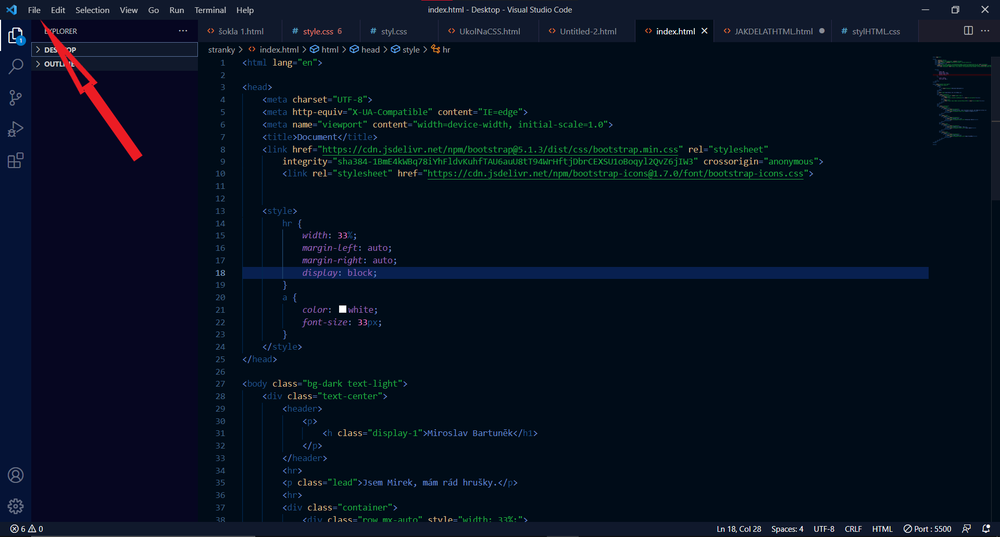
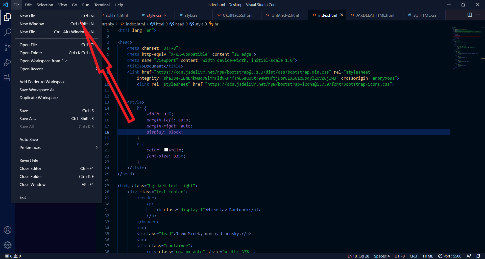
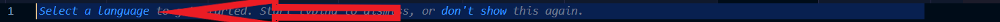
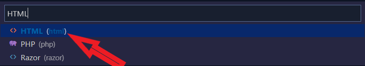

Nejprve si stáhenme prostředí, ve kterém HTML tvořime, což je VSC - Visual Studio Code, stáhnete si ho zde
Po nastavení samotného VSC, můžeme začít tvořit.
Na vytvoříme si nový soubor, najedeme na "File", poté klikneme na "New File" (Přesně jako na obrázku)

Nyní nás program vyzve abychom zvolili jazyk, kterým budeme psát, my si zvolíme HTML

Po zvolení HTML můžeme začít tvořit. Každý dokument v HTML začíná doctypem, který vždy bývá na 1. řádku, v rámečku dole je zobrazen
<!DOCTYPE html>Doporučuji místo psaní doctypu, napsat doc a zmáčknout tabulátor, to nám vypíše další dva potřebné příkazy: <head> a <body>, také nám to vypíše základní škálování na monitory
Head - Do headu píšeme třeba <title> což nám udělá název stránky v tabu
<title>HTML Tutorial</title>Nesmíme zapomenout <head> uzavřít </head>
Body - V body píšeme příkazy jako <p>, <h1> nebo jakéokoliv příkazy, které patří do body, neboli těla kódu. Stejně jako u <head>, zakončujeme </head>, zakončení bývá na posledních řádcích.
Pokud chceme psát kód v češtině, na 2. řádek musíme napsat tento příkaz
<html lang="cs">Pokud však kód cheme psát v angličtině, napíšeme pouze
<html lang="en">Po napsání těchto příkazů se nám zobrazí na posledním řádku zobrazí </html>, to vždy musí být poslední řádek, pod ním by nic nemělo být
Nyní jdeme na svůj první kód, začneme jednoduchým cvičením Hello World
Než začneme psát, musíme si vysvětlit jak psaní kódu v HTML funguje
Každý příkaz začíná < a končí >
<p> Takto vypíšeme jednoduchý řádek </p>Příkazem p uděláme jednoduchý řádek
Pak zde máme funkce jako h1,h2,h3,h4,h5,h6 - nadpisy
<h1> Takto zapíšeme h1, pokud cheme vybrat jinou hodnotu h, stačí přepsat 1 </h1>Když nyní víme, jak zapsat pár řádků, můžeme si napsat svůj první kus kód v HTML!
<h1>Můj první kód!</h1>
<p>Hello World</p>Gratuluji, právě jste vytvořili váš první nadpis a text v HTML. Teď se podíváme, jak si to vůbec zobrazíme.
Soubor si uložíme, buď najedeme na "File" a tam vybereme "Save", nebo jen zmáčkneme CTRL+S a nemusíme si práci komplikovat. Stránku si dle libosti pojmenujte
Doporučuji si na ploše udělat složku s názvem Web, tam najdeme jak samotnou stránku a nemusíme si poté komplikovat práci s vkládáním obrázků
Po vytvoření složky ve složce uvidíme naši stránku - pozor, stránka není na internetu, pouze je na vašem počítači, pokud stránku chcete sdílet kamarádům, musíte poslat soubor s kódem a s obrázky
Teď se podíváme, jak si do našeho webu vložíme obrázek
<a href="nazevsouboru.koncovka"<img src = "nazevsouboru.koncovka">Pozor! Obrázek musí být ve stejném adresáři jako je samotný kód (Ve stejné složce)